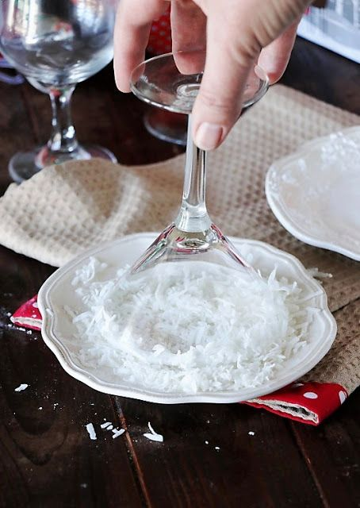

5cl vodka
2.5cl lime lé
1dl gránátalma lé
szóda
jég
kókuszreszelék
cukor
Keverjetek össze kókuszreszeléket cukorral, majd kenjétek be a koktélos poharatok száját egy szelet limeal és forgassátok bele a poharat. Ebben fogjátok az italt szervírozni.
Egy shakerben, vagy valamilyen shaker alternatívában (ez az ittassági szintetektől függ, hogy mi lehet) rázzátok össze a vodkát, lime levet és gránátalma levet pár kocka jéggel.
A már előkészített poharat töltsétek meg jéggel, majd a shakerben lévő italt öntsétek a pohárba. Ízlésetek szerint öntsétek fel a koktélt szódával. Fogyasszátok egészséggel!
Nándi, Fanni, Kriszta